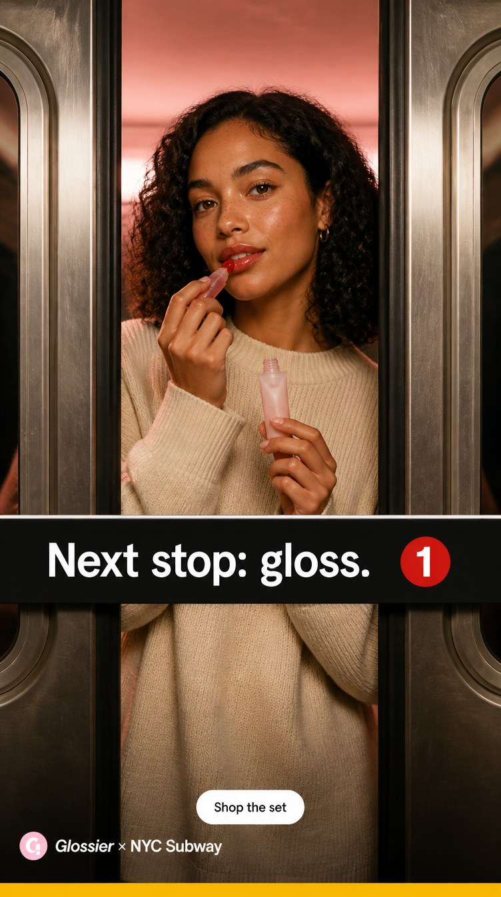
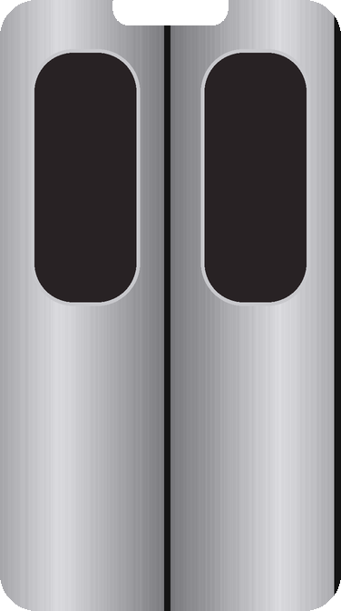
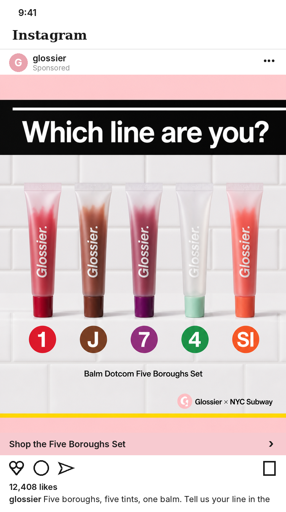
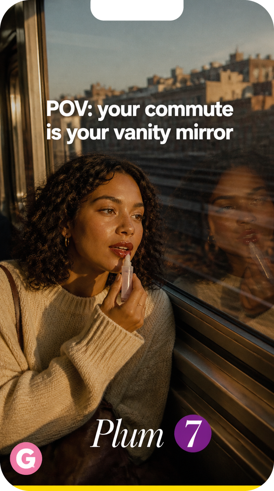
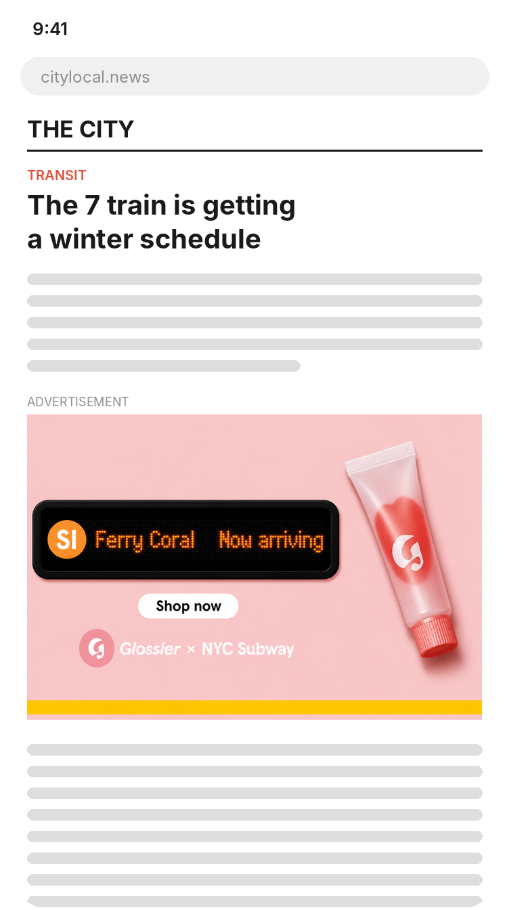
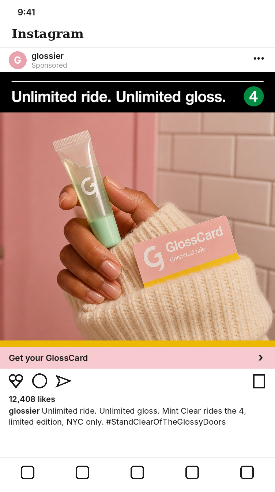
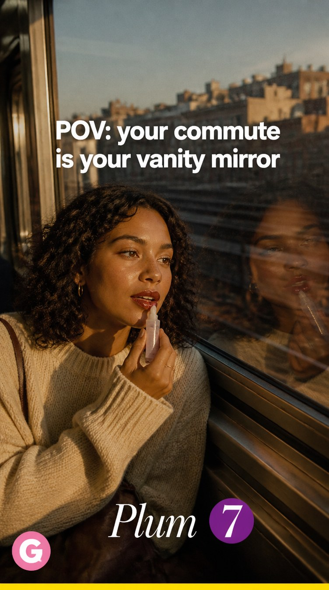
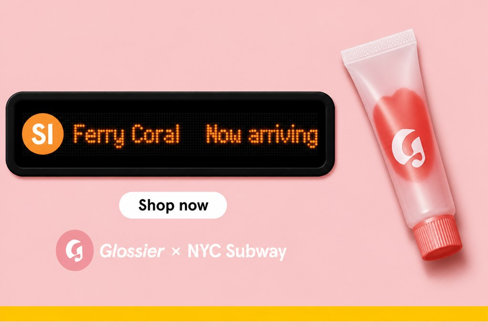
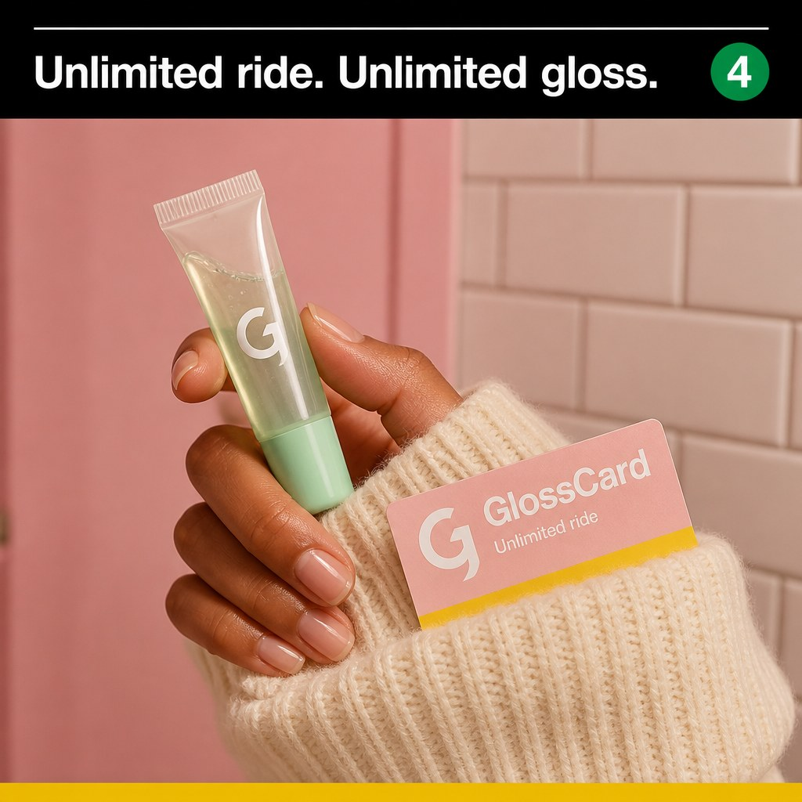

1
"Next stop: gloss."
Instagram Story · 9:16 · animated
A Story opens the way a subway car does: the doors part and she's already there. Cherry Express on the 1.
ART 3150 · Become a Crea(i)tive Director · Session 12.1
The campaign moves from the platform to the phone in your hand. Five digital ads for the Balm Dotcom Five Boroughs Set, made for the places riders scroll between stops: Instagram, TikTok and the web. Two of them move. Same idea throughout: your commute is your vanity mirror.





| # | Placement | Format | Concept | Tint |
|---|---|---|---|---|
| 1 | Instagram Story | 9:16 · animated | Doors opening | 1Cherry Express |
| 2 | Instagram feed | 4:5 | Which line are you? | All five |
| 3 | TikTok | 9:16 | POV: vanity mirror | 7Plum 7 |
| 4 | Web banner on a news site | 3:2 · animated | Now arriving | SIFerry Coral |
| 5 | Instagram / Pinterest feed | 1:1 | GlossCard | 4Mint Clear |

A Story opens the way a subway car does: the doors part and she's already there. Cherry Express on the 1.

A feed post built to start a conversation in the comments: every New Yorker has a line, and now a tint.

The campaign line in the language of TikTok. Golden hour on the elevated 7 turns the train window into a mirror. Plum 7 for Queens.

The station arrival board, the screen everyone stares at while they wait. The letters switch on one by one, like the real thing. Ferry Coral for Staten Island.

The MetroCard, redesigned as a GlossCard. An unlimited ride, now with unlimited gloss. Mint Clear on the 4.